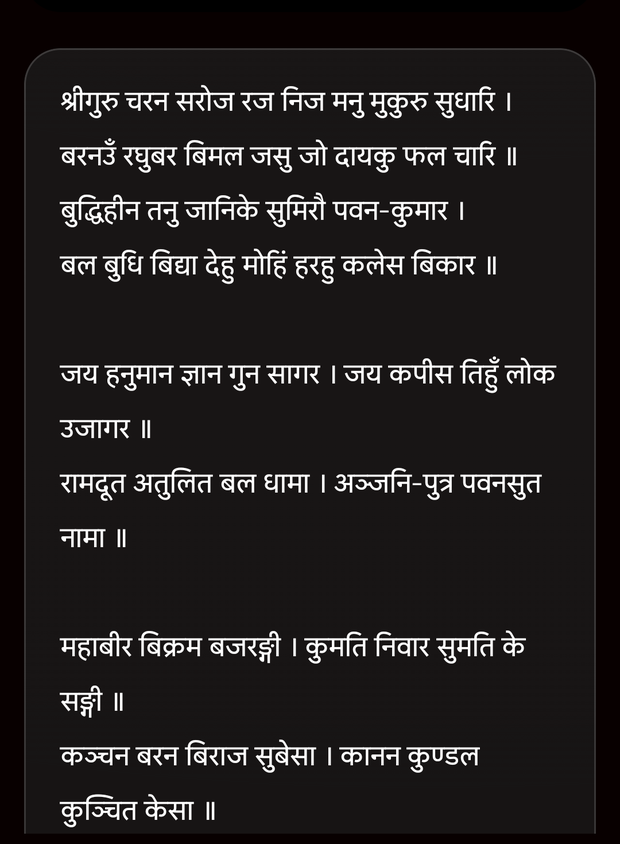

Wanwun
WanwunThe words that carry us home
A devotional library — bhajans, shloks, and aartis — now inside Wanwun.
Some words we don't just read; we return to them. A shloka learned at a grandparent's side, an aarti sung as the lamp is lit, a chalisa recited when the day feels heavy. The Bhajans library brings those words together in one calm place, so the verses that matter are always within reach — no searching the internet, no clutter, just devotion.
A shelf of the sacred
Open the Bhajans tab and it's all laid out for you: Bhajans and devotional melodies, timeless Shloks, evening Aartis, the Chalisas, and step-by-step Vidhis for rituals. Browse by category or by deity, and your recently viewed pieces stay pinned at the top — so the ones you turn to often are a single tap away. Looking for something specific? Search finds it in a moment.

Every verse, clearly
Each piece opens to its full text in clean, legible Devanagari — sized to read comfortably and to recite along, whether you know it by heart or are learning it for the first time. A small “minutes to read” hint tells you what you're settling into. And because the whole library is bundled with the app, the verses are there even when you're not — on a flight, in a temple, wherever the moment finds you.

For the everyday and the special
Some of these words belong to daily practice — a morning shloka, an evening aarti. Others belong to the big days: the vidhi for a festival, the chalisa for an occasion. Wanwun keeps both close, so whether you're marking an ordinary Tuesday or a once-a-year ceremony, the right words are ready when you are — sitting quietly alongside the Panchang and the festival dates that tell you when.
This is a living library — more bhajans, shloks and translations keep getting added. If there's a piece close to your heart that's missing, tell us through Support and we'll bring it in.
Keep the verses close
The Bhajans library is live in Wanwun today. Update the app and open the Bhajans tab.